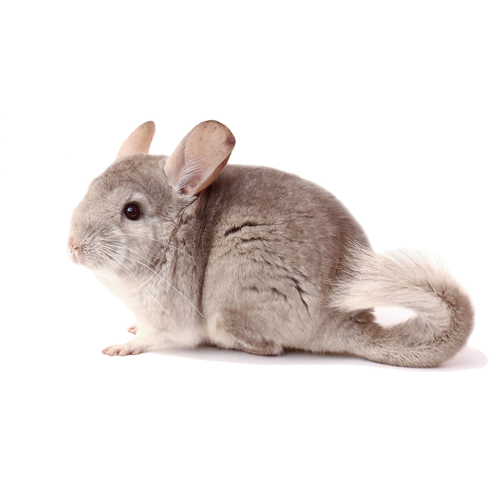
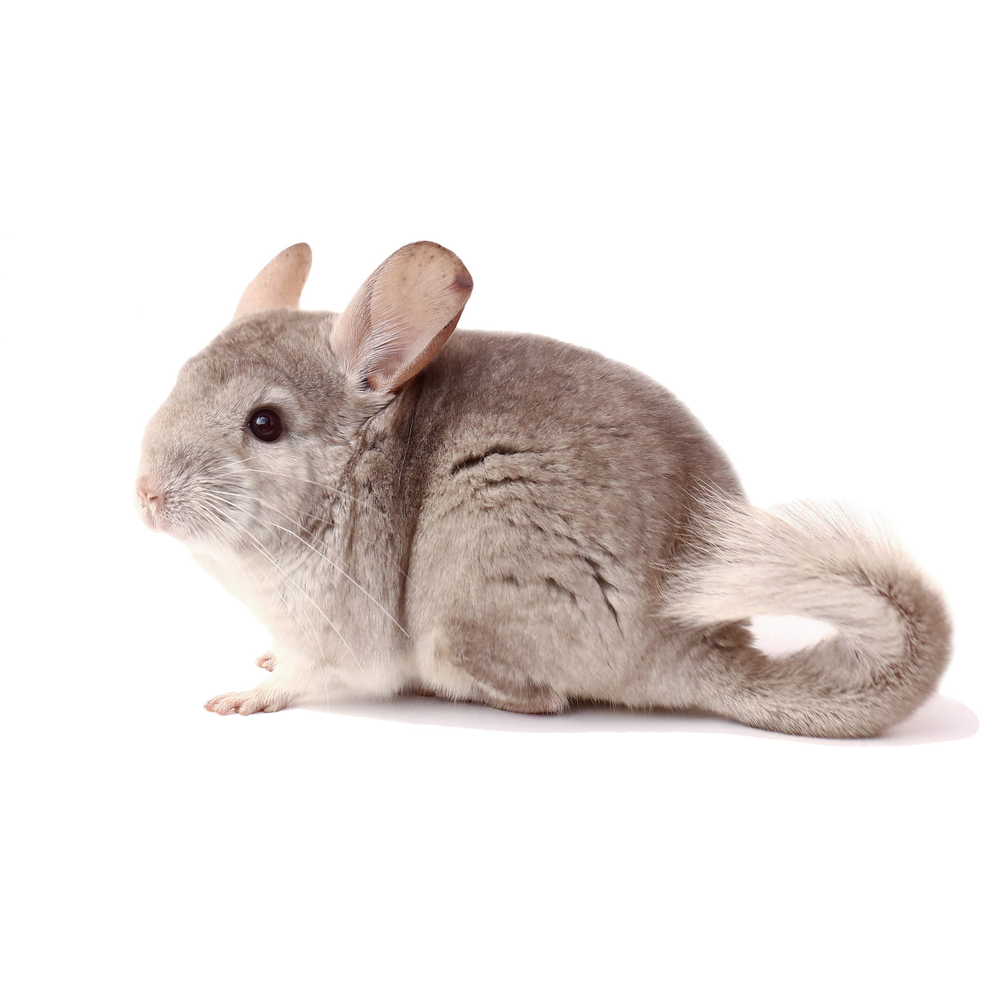
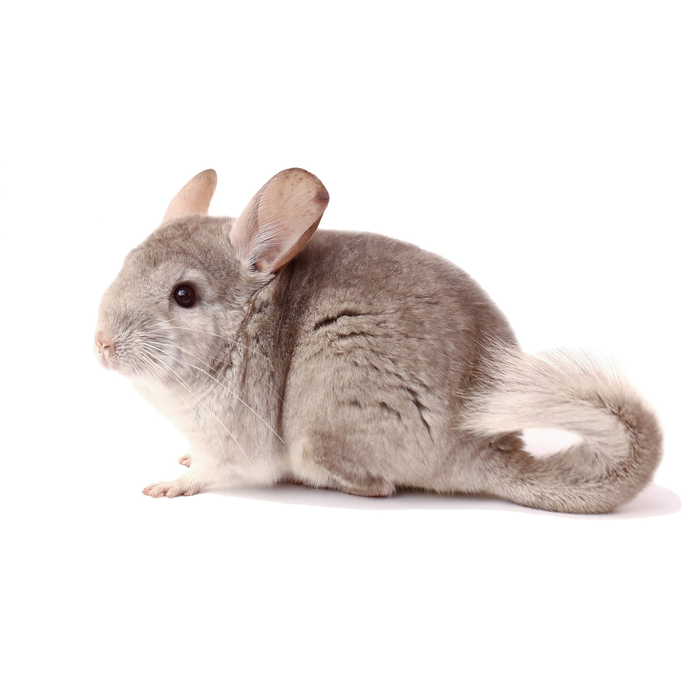

Save The Wild Chinchillas
Making amends with nature
A dedicated group of people in partnership with Non-Governmental Organizations
Chinchillas are caviomorph rodents, which once roamed South America from the sea to the Andes. Chinchilla chinchilla (brevicaudata), short tailed chinchillas, were hunted severely and are endangered. It's native range included the Andes of Peru, Bolivia, Chile and Argentina. Believed extinct, it is known to now exist in the wild in Bolivia and Chile. Long-tailed chinchillas, C. lanigera, are endangered. It's native extent is only north-central Chile (Jimenez 1996). Chinchillas are endangered due to hunting and trapping for pelts. Between 1895 and 1921, over three million pelts including a small number of live animals were exported from Chile. Some authors report that more then 21 million chinchillas were actually killed between 1840 and 1916 and only a fraction of those caught were able to be exported (1996). Upon rediscovery of wild C. lanigera during the mid-1970's a series of studies on these endangered rodent populations have tried to understand chinchillas, their habitat and populations which continue to decline. Less than half of the wild long-tailed population is located within a fenced reserve. About 5,000 individuals are located on private land. Excessive hunting greatly reduced the number of wild chinchillas. Today hunting is forbidden and animals are protected by the Convention on International Trade of Endangered Animals (CITES). Although chinchillas are protected, habitat continues to be destroyed by grazing animals, collection of wood and mining.
Pet chinchillas have been domesticated. Due to this process, they are larger animals with larger litters and probably have increased hair density.
Wild ones are leaner as they spend more time in behaviors that use lots calories like detecting danger, defending territories and searching for food.
Our main objectives are to educate and involve people worldwide in conservation, promote habitat regeneration, and create knowledgebase. We are a group of people restoring essential habitat for endangered chinchillas while deterring further habitat degradation. We have created and distributed educational materials ranging from children’s stories and street murals to scientific publications with the help of artists, students, teachers, scientists, and zoos internationally. We utilize the press and social media to promote awareness of habitat preservation in specific, and conservation in general. We work directly with the local community, focusing on creating and enhancing habitat for chinchillas on communal lands. Although we work outside the National Chinchilla Reserve, we support it by compiling reports, conducting scientific training for the guards and sharing field supplies. Our partnership with the local community has strengthened our knowledge and has led to their growing support for local and global conservation. We are proud to say that people from Africa, Asia, Australia, Europe, North and South America have aided in our achievements.
Help us, help them. Funds are needed for research, education and habitat restoration. 100% of your online donation comes directly to our projects!
